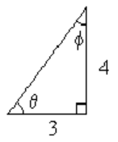

SubsectionReview Problems
¶
For Problems 1-8, answer true or false.
1
\(\sin (\beta + \dfrac{\pi}{4})=\sin \beta + \dfrac{1}{\sqrt{2}}\)2
\(\cos (\dfrac{\pi}{3} - t)=\dfrac{1}{2}-\cos t\)3
\(\tan (z-w)=\dfrac{\sin (z-w)}{\cos (z-w)}\)4
\(\sin 2\phi = 1 - \cos 2\phi\)5
\(\sin (\dfrac{\pi}{2}-x)=1-\sin x\)6
\(\sin (\pi - x)=\sin x\)7
\(\cos^2 \alpha - \sin^2 \alpha = -1\)8
\(\tan^{-1} s = \dfrac{1}{\tan s}\)
9
If \(\sin x = -0.4\) and \(\cos x \gt 0,\) find an exact value for \(\cos (x + \dfrac{3\pi}{4})\text{.}\)
10
If \(\cos x = -0.75\) and \(\sin x \lt 0,\) find an exact value for \(\cos (x - \dfrac{4\pi}{3})\text{.}\)
11
If \(\cos \theta = \dfrac{-3}{8},~ \pi \lt \theta \lt \dfrac{3\pi}{2},\) and \(\sin \phi = \dfrac{1}{4},~ \dfrac{\pi}{2} \lt \phi \lt \pi,\) find exact values for
- \(\sin (\theta + \phi)\)
- \(\tan (\theta + \phi)\)
12
If \(\sin \rho = \dfrac{5}{6},~ \dfrac{\pi}{2} \lt \rho \lt \pi,\) and \(\cos \mu = \dfrac{-1}{3},~ \dfrac{\pi}{2} \lt \mu \lt \pi,\) find exact values for
- \(\cos (\rho - \mu)\)
- \(\tan (\rho - \mu)\)
13
If \(\tan (x + y) =2\) and \(\tan y = \dfrac{1}{3},\) find \(\tan x\text{.}\)
14
If \(\tan (x - y) =\dfrac{1}{4}\) and \(\tan x = 4,\) find \(\tan y\text{.}\)
For Problems 15-16, use the sum and difference formulas to expand each expression.
15
\(\tan (t - \dfrac{5\pi}{3})\)16
\(\cos (s+ \dfrac{7\pi}{4})\)
For Problems 17-18, use the figure to find the trigonometric ratios.

17
- \(\sin \theta\)
- \(\cos \theta\)
- \(\tan \theta\)
- \(\sin 2\theta\)
- \(\cos 2\theta\)
- \(\tan 2\theta\)
18
- \(\sin \phi\)
- \(\cos \phi\)
- \(\tan \phi\)
- \(\sin 2\phi\)
- \(\cos 2\phi\)
- \(\tan 2\phi\)
For Problems 19-24, use identities to simplify each expression.
19
\(\sin 4x \cos 5x + \cos 4x \sin 5x\)
20
\(\cos 3\beta \cos 1.5 - \sin 3\beta \sin 1.5\)
21
\(\dfrac{\tan 2\phi - \tan 2}{1 + \tan 2\phi \tan 2}\)
22
\(\dfrac{\tan \dfrac{5\pi}{9} - \tan \dfrac{2\pi}{9}}{1 + \tan \dfrac{5\pi}{9} \tan \dfrac{2\pi}{9}}\)
23
\(2\sin 4\theta \cos 4\theta\)
24
\(1-2\sin^2 3\phi\)
For Problems 25-26,
- Use identities to rewrite the equation in terms of a single angle.
- Solve. Give exact solutions between \(0\) and \(2\pi\text{.}\)
25
\(\cos 2\theta - \sin \theta = 1\)
26
\(\tan 2z + \tan z = 0\)
For Problems 27-28, graph the function and decide if it has an inverse function.
27
\(f(x) = 4x - x^3\)28
\(g(x) = 5 + \sqrt[3]{x - 2}\)
For Problems 29-30, give exact values in radians.
29
- \(\tan^{-1}(-\sqrt{3})\)
- \(\arccos (-\dfrac{1}{2})\)
30
- \(\arcsin (-1)\)
- \(\cos^{-1}(-1)\)
31
An IMAX movie screen is 52.8 feet high.
- If your line of sight is level with the bottom of the screen, write an expression for the angle subtended by the screen when you sit \(x\) feet away.
- Evaluate your expression for \(x = 20\) feet and for \(x = 100\) feet.
32
Rembrandt's painting The Night Watch measures 13 feet high by 16 feet wide.
- Write an expression for the angle subtended by the width of the painting if you sit \(d\) feet back from the center of the painting.
- Evaluate your expression for \(d = 10\) feet and for \(d = 25\) feet.
For Problems 33-34, solve for \(\theta\text{.}\)
33
\(v_y = v_0\sin \theta - gt\)
34
\(\Delta W = -q_0 E\cos (\pi - \theta)\Delta l\)
For Problems 35-36, find exact values without using a calculator.
35
\(\cos[\tan^{-1}(\dfrac{-\sqrt{5}}{2})]\)
36
\(\tan[\sin^{-1}(\dfrac{2}{7})]\)
For Problems 37-38, simplify the expression.
37
\(\sin(\cos^{-1}2t)\)
38
\(\tan(\cos^{-1}m)\)
39
Explain why one of the expressions \(\sin^{-1}x\) or \(\sin^{-1}(\dfrac{1}{x})\) must be undefined.
40
Does \(\sin^{-1}(-x) = -\sin^{-1}(x)\text{?}\) Does \(\cos^{-1}(-x) = -\cos^{-1}(x)\text{?}\)
For Problems 41-42, evaluate. Round answers to 3 decimal places if necessary.
41
- \(csc 27\degree\)
- \(sec 108\degree\)
- \(cto 245\degree\)
42
- \(\csc 5.3\)
- \(\cot 0.98\)
- \(\sec 2.17\)
For Problems 43-50, find all six trigonometric ratios for the angle \(\theta\text{.}\)
43
44
45
46
47
48
49
\(6\cos \alpha = -5,~ 180\degree |lt \alpha \lt 270\degree\)50
\(4\sin \theta = 3,~ \theta\) is obtuse
For Problems 51-56, write algebraic expressions for the six trigonometric ratios of the angle.
51
52
53
54
55
\(2\sin \alpha - k = 0,~\dfrac{\pi}{2} \lt \alpha \lt \pi\)56
\(h\cos \beta - 3 = 0,~\dfrac{3\pi}{2} \lt \beta \lt 2\pi\)
For Problems 57-58, find all six trigonometric ratios of the arc \(\theta\text{.}\) Round to two places.
For Problems 59-62, evaluate exactly.
59
\(4\cot \dfrac{3\pi}{4} - \sec^2 \dfrac{\pi}{3}\)60
\(\dfrac{1}{2}\csc \dfrac{2\pi}{3} + \tan^2 \dfrac{5\pi}{6}\)61
\(\csc \dfrac{7\pi}{6}\cos \dfrac{5\pi}{4}\)62
\(\sec \dfrac{7\pi}{4}\cot \dfrac{4\pi}{3}\)
For Problems 63-64, find all solutions between \(0\) and \(2\pi\text{.}\) Round your solutions to tenths.
63
\(3\csc \theta + 2 = 12\)64
\(5\cot \theta + 15 = -3\)
For Problems 65-70, sketch a graph of each function. Then choose the function or functions described by each statement.
\begin{equation*}
y = \sec x ~~~~~~~~~~~ y = \csc x ~~~~~~~~~~~ y = \cot x
\end{equation*}
\begin{equation*}
y = \cos^{-1} x ~~~~~~~~ y = \sin^{-1} x ~~~~~~ y = \tan^{-1} x
\end{equation*}
65
The graph has vertical asymptotes at multiples of \(\pi\text{.}\)
66
The graph has a horizontal asymptote at \(\dfrac{\pi}{2}\text{.}\)
67
The function values are the reciprocals of \(y = \cos x\text{.}\)
68
The function is defined only for \(x\)-values between \(-1\) and \(1\text{,}\) inclusive.
69
None of the function values lie between \(-1\) and \(1\text{.}\)
70
The graph includes the origin.
For Problems 71-74,
- Graph the function on the interval \(-2\pi \le\ x \le 2\pi\text{,}\) and use the graph to write the function in a simpler form.
- Verify your conjecture algebraically.
71
\(f(x)=\tan x(\cos x - \cot x)\)72
\(g(x)=\csc x - \cot x\cos x\)73
\(G(x) = \sin x(\sec x - \csc x)\)74
\(F(x) = \dfrac{1}{2}(\dfrac{\cos x}{1+\sin x} + \dfrac{1+ \sin x}{\cos x})\)
For Problems 75-78, simplify the expression.
75
\(1-\dfrac{\sin x}{\csc x}\)76
\(\dfrac{\sin x}{\csc x}+\dfrac{\cos x}{\sec x}\)77
\(\dfrac{2+\tan^2 B}{\sec^2 B} - 1\)78
\(\dfrac{\csc t}{\tan t + \cot t}\)
For Problems 79-82, use the suggested substitution to simplify the expression.
79
\(\dfrac{\sqrt{16+x^2}}{x},~~x = 4\tan \theta\)80
\(x\sqrt{4-x^2},~~x=2\sin \theta\)81
\(\dfrac{x^2 - 3}{x},~~x=\sqrt{3}\sec \theta\)82
\(\dfrac{x}{\sqrt{x^2+2}},~~x=\sqrt{2}\tan \theta\)
83
This problem outlines a geometric proof of difference of angles formula for tangent.
- In the figure below left, \(\alpha=\angle ABC\) and \(\beta = \angle DBC\text{.}\) Write expressions in terms of \(\alpha\) and \(\beta\) for the sides \(AC,~DC,\) and \(AD\text{.}\)
- In the figure above right, explain why \(\triangle ABC\) is similar to \(\triangle FBE\text{.}\)
- Explain why \(\angle FDC = \alpha\text{.}\)
- Write an expression in terms of \(\alpha\) and \(\beta\) for side \(CF\text{.}\)
- Explain why \(\triangle FBE\) is similar to \(\triangle ADE\text{.}\)
- Justify each equality in the statement
\begin{equation*}
\tan (\alpha - \beta) = \dfrac{DE}{BE} = \dfrac{AD}{BF} = \dfrac{\tan \alpha - \tan \beta}{1+\tan \alpha \tan \beta}
\end{equation*}
84
Let \(L_1\) and \(L_2\) be two lines with slopes \(m_1\) and \(m_2\text{,}\) respectively, and let \(\theta\) be the acute angle formed between the two lines. Use an identity to show that
\begin{equation*}
\tan \theta = \dfrac{m_2-m_1}{1+m_1m_2}
\end{equation*}
For Problems 85-86, use the fact proved above that if \(\theta\) is one angle of a triangle and \(s\) is the length of the opposite side, then the diameterof the circumscribing circle is \(d=s \csc \theta\text{.}\) Round your answers to the nearest hundredth.
85
In the figure above, find the diameter of the circumscribing circle, the angle \(\alpha\text{,}\) and the sides \(a\) and \(b\text{.}\)
86
A triangle has one side of length 17cm and the angle opposite is \(26\degree\text{.}\) Find the diameter of the circle that circumscribes the triangle.